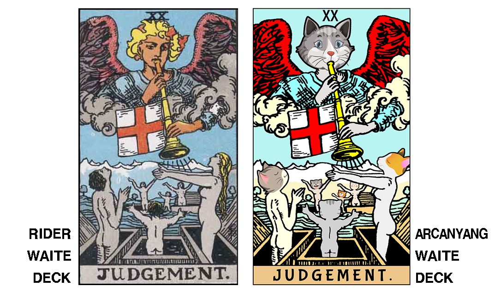

아르카냥 웨이트 타로 덱(Arcanyang Waite Tarot Deck)
"아르카나(Arcana)"는 숨겨진 비밀을 뜻하는 라틴어 "Arcanum"의 복수형으로서 "아르카냥(Arcanyang)"은 "비밀을 간직한 고양이"를 의미하며, 아르카냥 웨이트 타로 덱은 라이더 웨이트 타로 덱(Rider Waite Tarot Deck)을 기반으로 만들어졌습니다.
1909년 처음 출판되어 현대 타로의 표준으로 여겨지고 있는 라이더 웨이트 타로 덱은 각각의 이미지 속에 많은 상징과 디테일을 담고 있습니다.
시간이 흘러 라이더 웨이트 타로 덱이 퍼블릭 도메인이 된 후 이를 기반으로 하는 수많은 타로 덱이 만들어졌지만 타로 리딩의 가장 중요한 요소인 이미지 속 상징과 디테일이 왜곡, 누락되거나 원전을 거의 그대로 답습하는 경우가 대부분이었습니다.
아르카냥 웨이트 타로 덱은 라이더 웨이트 타로 덱의 이미지를 강한 선과 선명한 색감으로 보정한 후 고양이 캐릭터를 접목시킴으로써 오리지날 이미지가 담고 있는 상징과 디테일을 그대로 살리면서도 친숙하고 귀여운 느낌이 들도록 디자인한 웨이트 계열 타로 덱입니다.


